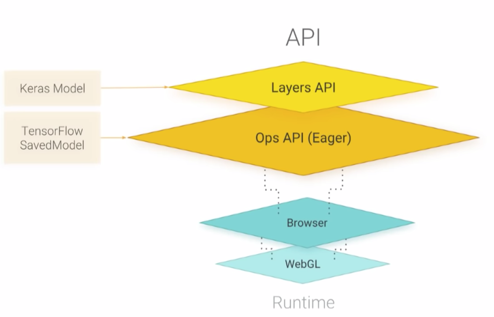
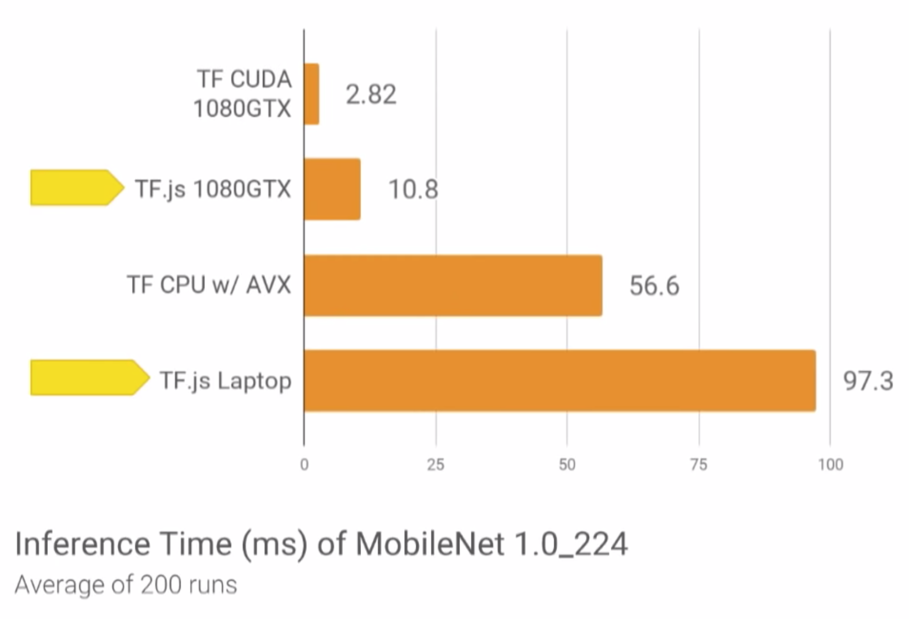
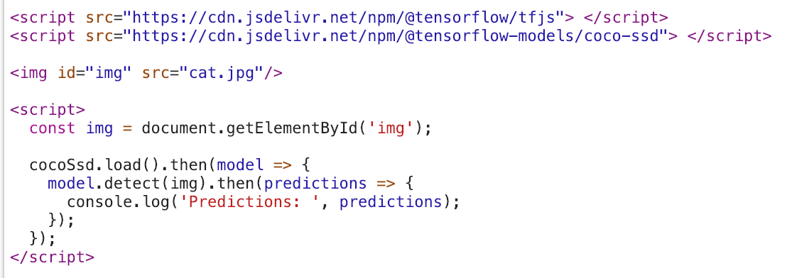
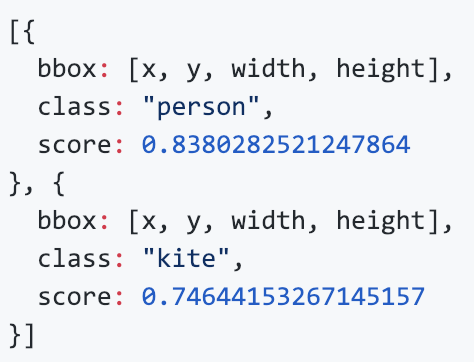

TensorFlow.js
- Runs on WebGL, allowing GPU acceleration.
- Features MobileNet from Google, which has been developed to make models lightweight to run on mobile devices.
- Supports ML/DL model creation, training and inference within browser.
- Hassle free setup.
- Supports conversion and use of existing pre-trained TensorFlow models.
- Exposes Layers API in the js library with Keras like syntax.

Performance relative to TensorFlow

COCO-SSD Model


Loading the model, predictions can be rendered using <canvas>
Links: